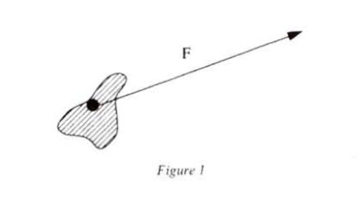
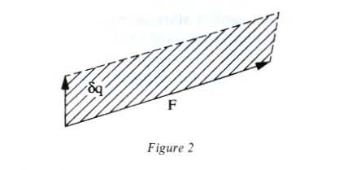
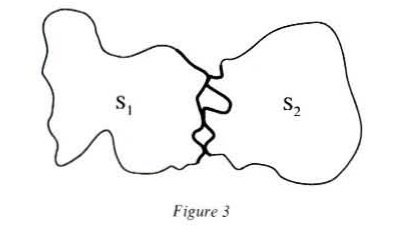
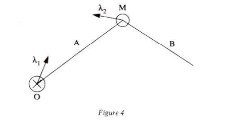
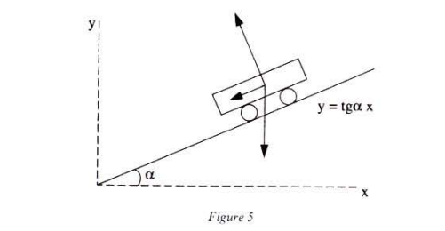
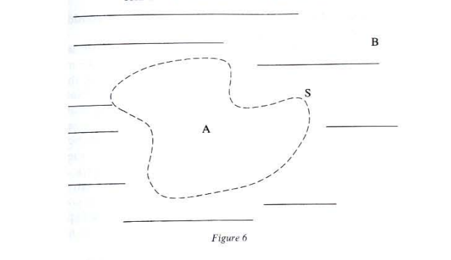
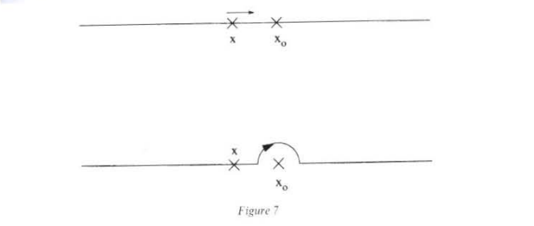
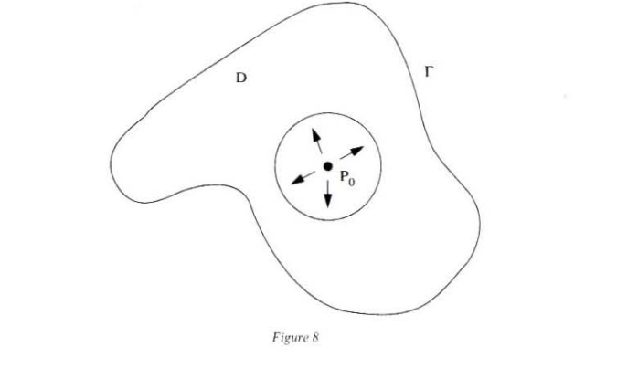
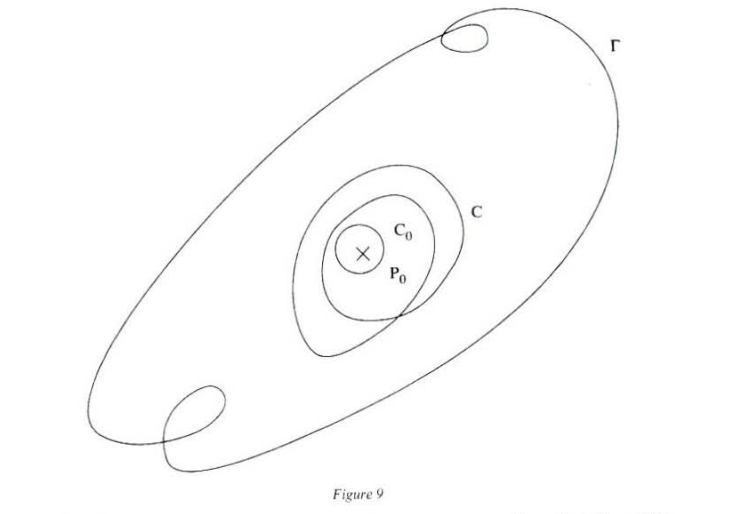

Gilles Châtelet
Chapter 1: The Enchantment of the Virtual
Chapter 2: The Screen, the Spectrum and the Pendulum
Chapter 3: The Force of Ambiguity
Chapter 4: Grassmann's Capture of the Extension
Chapter 5: Electrogeometric Space
Did Aristotle have any suspicion of the potency of the boundary he had thrown up between physical and mathematical natures? Whatever the case, he revels in opposing them point by point: physical natures are dedicated to mobility and subject to final causes, but enjoy a separate existence; mathematical natures, immobile and necessary, are separable only by thought, and our wit has to lend them an existence.
Many modern epistemologies still carry the marks of the split effected by Aristotle to found his classification of the sciences, and remain fascinated by the relationship of reciprocal predation that these two natures seem to foster towards one another. For these natures fight over ontological precedence. Aristotle, as it so happens, remains ambiguous on this question: he refers to physics as a second philosophy, behind metaphysics, making no mention of mathematics;1 he even states that if there were no substances other than those that exist in Nature, physics would be first among sciences! But mathematical natures are not prey to mobility and, as an intelligible matter, mathematics can be deduced from a first principle by a chain of necessities. The task of choosing is therefore far from simple.
It is not easy to weigh in a single balance a ‘real’ existence, which is independent of us, but mobile and corruptible, and an intelligible matter, which exists only by proxy through the wit of the geometer. How do we choose between precedence in the order of Being (which physical natures can lay claim to) and logical precedence2 (which mathematical natures can lay claim to)?3 We know how Aristotle reconciles the two rivals: by subordinating them to metaphysics — the first philosophy — whose objective is the theory of immobile and real being, immutable substance.
But Aristotle does not content himself with the tutelage of metaphysics; his theory of abstraction also takes care to make a more concrete passage between the two natures, whose opposition he had so strongly underlined. The Aristotelian theory of abstraction-addition, which relates however not only to the relationship between mathematics and physics, establishes a reversible action that makes it possible to add or subtract determinations at leisure. Stripping a physical being of its matter and its mobility, I can also produce by abstraction a mathematical being — to which the geometer’s wit will lend an existence — and then simply reintegrate this being into the order of physical natures, by restoring the determinations of which I had deprived it: this is the action of ‘prothesis’ or addition of determinations.4 The theory of abstraction-prothesis also makes it readily possible to break the ties with sensible matter, to forget about mobility, to opt for this or that mode of contemplation, to see without differentiating — at the price perhaps of the ‘lending’ of an existence — a piece of sensible matter or a disembodied geometrical solid.
But can one extract a part from a whole without leaving scars? Can one solder determinations back on at will?
We have just touched on the weak point of the theory of abstraction: a certain casualness with regard to what makes it possible to attach or detach determinations. For to abstract is always to mutilate. Aristotle’s sensible nature (hylè) is always part of a whole; abstraction removes a piece from the flesh of the sensible,5 and this operation, always cruel, cannot be reduced to an inoffensive subtraction of determinations, which one can neutralize as and when one chooses. Anyone who has practised mathematics or the physical sciences a little cannot help but detect here a sleight of hand: is it so easy to ‘begin’ with a physical being, ‘purify’ it to turn it into a mathematical being and then ‘remake’ it (blemish or enrichment?) into a physical being? One sense that the real existence of beings cannot be grafted on by a simple whim of the philosopher, for sensible matter is associated with cutouts of placed or inserted individuals; as for mathematical beings, their dignity as eternal and necessary beings seems above all a way of compensating for the extreme poverty of their determinations. Moreover, abstraction pushed to its limits presents us with a paradoxical situation: immobile substance, the object of metaphysics, would then be of the poorest content!
It is easy to discover what places this strain on the theory of abstraction: its contempt for the gesture that made the determination possible. It seems that the theory of abstraction-prothesis exacerbates the opposition of the terms that it was supposed to bind back together. The shift becomes inevitable. Mathematical beings appear above all as impoverished physical beings, and the latter remain prisoners of the order of final causes: a moving body is moved according to the form that it should have and according to the place where it ought to remain.
These shortcomings at least have the merit of drawing attention to two crucial points:
Several questions then pose themselves: can one conceive of physico-mathematical beings that are not irremediably enslaved to the appetites of the world, without turning them into abstract figures reduced to existence by proxy? To answer these requirements, modern physico-mathematics has borrowed a good deal from Aristotle’s famous definition: ‘The fulfillment of what is potentially, is motion.’8 Motion, according to Aristotle, is the process of actualization of a potential from which cannot be reduced to the simple nostalgic yearning of a form in transit towards a higher form. For to reduce motion to an act is immediately to quench it: the moving has to be fulfilled in respect to power, since all motion is above all a seed of motion. It is precisely this patience in the fulfillment of the act that means that thought cannot rid itself of motion by assimilating it to a transition between states dictated by appetences.
But neither is motion the passive waiting of a form. Motion is a way of knitting act and power together and, if potential is not reduced to the receiving of accidents, a thought of the metastable becomes possible: the melting of ice is not of ice that ‘can’ melt, but of ice that is ‘really’ in the process of melting; water is of course ‘potential’ in ice, but above all it actualizes itself there. Potential is what, in motion, allows the knotting together of an ‘already’ and a ‘not yet’; it gives some reserve to the act , it is what ensures that act does not exhaust motion and, in giving some scope to the grasping of the motion, it respects and extols the latencies coiled in the bodies. That is why perfect motion must be understood as an indefinitely suspended actualization, dissipating no power and requiring no displacement (no ‘local motion’): patient and sovereign, the mobility of the first motor does not draw attention to itself by eating up space.
Potential — the particular patience attached to each moving body — is exactly the thing that evades the clutches of an abstraction that seized mobility from, or granted mobility to, beings. The thought of the potential does not siphon mobility off from the motor to the moved, it does not pour it from a full receptacle into an empty one. The motor and the moved are not two inert beings opposite one another, transmitting a quality; the moved is not the only one to change: the motor possesses the form and, at any rate, not just any form could imprint just any matter; the ass cannot learn, but the pupil, even an ignorant one, can. That is, moreover, what is at stake in learning: to create a kind of tension that answers to the particular call of the pupil.
To learn or teach, to accord or cede mobility gradually to a body, is always to invent a new homogeneity — a potential — and to resist the expeditious processes of the ‘transference of information’.
In sensing that physico-mathematics was being played out at the level of an exchange of mobility and that there existed a kind of profound affinity between the pupil who learns and the moving body that progressively receives degrees of velocities of forces, Aristotle sketched out the path of another theory of abstraction, or another manner of cutting out by thought, which does not limit itself to making a ‘prothesis’ that can be adjusted at will. Leibniz is certainly among those who have most profitably pondered Aristotle’s discreet invitation; he was able to see in virtuality a means of combining act and power that was suited to answering the questions that were preoccupying him:
Virtuality invents and decides on a mode of elasticity; it prepares, cuts out and propels new plastic units. Virtuality awakens gestures: it solicits determination, it does not snatch it. It is not the same as the range of possibles, but allows for its decision and unfolding. Leibniz knew that there is an invitation in the virtual that escapes the philosopher who is in a hurry; to the latter, a block of unrefined marble and the statue that ‘comes out’ of it will seem strangers to one another, if he does not know the meditations of the Theophilus of the New Essays: it is hard to imagine that there are veins in the marble until one discovers them.9
In a way, Avicenna had already brought virtuality into the world of bodies by distinguishing between the dimension that is actualized in length, width and depth (quantitas dimensionalis) and the indeterminate dimension (quantitas virtualis) that predisposes the unrefined matter to receive this or that determination. The quantitas virtualis is therefore linked to the susceptibility of the matter to acquire extension and to become graspable in three dimensions, and is what gives it its character as a corporeal form (forma corporalis).10 The quantitas virtualis is not a magnitude, but an experiment by which the metaphysician propels certain components of his own body towards the matter: he inscribes what we would today call a reference trihedron in each point of the fragment of matter whose motion he wishes to study. A coordination of this kind thus allows him to make sure at a distance of the ‘solids’ that are so many genuine rudimentary artificial bodies, which have since become identified with the object of classical mechanics. The quantitas virtualis is not an ‘abstraction’: it removes no determination. It poses the extended body as that which virtually gathers and coordinates the determinations of the quantitas dimensionalis. The latter can vary, but it is impossible to strip matter of an indeterminate dimension, of one of its quantitates virtuales, which neither deteriorate nor fade.
This way of opening a field of investigation is characteristic of the virtual: controlling the diversity of the accidents of a substrate by introducing a subject — with a range sufficiently extensive and sufficiently elastic to unfold these accidents in one go without exhausting itself in ‘registering them simultaneously and successively’.
Bear in mind that it is the quantitas vitualis that allows Aegidius to give a convincing solution to the theological problem of transubstantiation. If accidents can only be imagined embedded in a subject, then the independent existence of the colour of the bread and the wine, when these, as substance, become the body and blood of Christ, remains incomprehensible. But, if the accident is linked with only the capacity to adhere to a substrate, the Eucharist can be the object of a rational theology. To grasp this ‘capacity’, one should have to construct a device that splits the quantity in the quantitas virtualis and quantitas dimensionalis at the same time as articulating them, in such a way that the first is able to unfold the accidents of the second. It is thus that, to take account of the permanence of certain accidents (such as the degrees of condensation and rarefaction of fluids), Aegidius11 constructs a triptych where is the quantitas materiae (what we today call the mass), the density and the volume.
The density provides a hinge between the mass and the volume , the former enveloping the variations of the latter. Indeed, each piece of the triptych possesses a specific ontological status. Aegidius states:
It should be understood that in the matter of the bread and the wine as well as in all earthly matter there are two quantities and two kinds of dimensions: determinate and indeterminate dimensions. For matter is so and so much and occupies such and such a volume. If it can be shown that it is not the same quantity by which matter is so and so much and by which it has such and such a volume, and, on the other hand, if we can state that the quantity in virtue of which matter is so and so much precedes the quantity in virtue of which it occupies such and such a volume and that in the first kind of quantity, as in a subject, the second kind of quantity is anchored, then it is easy.12
As the relation (ratio) between two quantities, the density makes it possible to compensate for the variations of volume and to show the ontological precedence of the mass, which likewise can remain constant while unfolding different degrees of concentration. The distinction between ‘dimensional’ quantity and ‘virtual’ quantity leads therefore to the invention of a device that, making use of the elasticity gained by the introduction of an intensive quantity (density in our example), provides itself with the means to articulate them by enveloping with one the variations of the other.
It would not be exaggerated to hold that the discoveries of Avicenna and Aegidius threw down the foundations of a physico-mathematical project, the understanding of which has conditioned that of all of Western metaphysics since Descartes.
The significance of this did not escape Leibniz: the devices for unfolding spectra must be an integral part of a mechanics that, because it does not disregard potentialities, does not allow itself to be subordinated to geometry. Being elastic, mass gives some spring to things; one cannot simply swallow it up in a kinematics as Descartes did. This is probably what Leibniz most reproaches him for: having reduced the Galilean project to a description of impacts and transference of impulses. This project certainly had the ambition of conceiving the world of bodies as a geometric universum, but also, and before all else, of grasping in a single intuition the emergence of the concepts of geometry and that of the acts of material filling and connections of causality. This last requirement certainly does not imply — quite the contrary — the elimination of all potentiality. It is nonetheless this that Descartes points to as carrying suspect ‘metaphysical’ connotations, because they are always suspected of not giving themselves up bound hand and foot to the clarity of the extension.
To Descartes, who claims to grasp the physical being-in-the-world under the determinations of length, breadth and depth only, Leibniz responds that the bare size does not exist alone and that ‘the points weight nothing’. He does not accept that the quantity of motion is the sole determination that is not completely geometric, which actualizes itself when impacts occur. In fact, the impact is the privileged type of physical event in Cartesian mechanics, which denies the body all latent power of action and seems consumed by an impatience of actualization. Leibniz saw that the complete staging of mathematical physics involved the construction of imposing infrastructures which could not help but implicate metaphysics. In particular, he is convinced that these notions of potentiality and of internal mobility, suitably interpreted, make it possible to conceive the profound identity between mathematics and physics without resort to the ontological subordination proposed by Aristotle.
To give elasticity to mass, to assert its irreducible difference from geometric size, is to confer an ontological dignity on it and to associate it with the active potentiality of which Aristotle had already had an inkling. It is elasticity that gives spring to mass (which for Descartes is a simple factor of inertia) and that makes it possible for the Understanding to grasp the progressive reception of degrees of velocity.
Is there any danger of this plasticity of mass ‘sullying’ the new mechanics? Is it not the corruptible wing of the edifice? Quite the opposite, for Leibniz states:
Although I am convinced that everything is done mechanically in corporeal Nature, I nevertheless also believe that the very principles of mechanics, that is to say the first laws of motion, have a more sublime origin than pure mathematics can furnish … There is in matter something other than the purely geometric, that is, than the extension and its alteration, and its bare alteration … One realizes that some superior or metaphysical notion that is, of substance, action and force, must be added; and these notions mean that everything that suffers an action must in turn act, and everything that acts must suffer some reaction … I remain persuaded that all bodies are naturally extended and that there is no extension without body. Nonetheless, we must not confuse the notions of plane, space, or pure extension with the notion of substance, which, in addition to the extension, also contains the opposition, that is to say, the action and reaction.13
It is not enough to dismiss Aristotle’s definition as ‘obscure and metaphysical’; it is necessary to acknowledge that it was able to see motion as a way of knitting act and power together:
I had penetrated deeply into the land of the Scholastics, when mathematics and modern authors made me withdraw from it while I was still young. Their beautiful ways of explaining Nature mechanically charmed me, and with good reason I despised the method of those who use only forms or faculties of which nothing is understood. But later, after trying to explore the principles of mechanics itself in order to account for the laws of Nature which we learn from experience, I perceived that the sole consideration of extended mass was not enough but that it was necessary, in addition, to use the concept of force, which is fully intelligible, although it falls within the sphere of metaphysics.14 [T]he concept of forces or powers … for whose explanation I have set up a distinct science of dynamics, brings the strongest light to bear upon our understanding of the true concept of substance. Active force differs from the mere power familiar to the Schools, for the active power or faculty of the Scholastics is nothing but a close possibility of acting, which needs an external excitation or a stimulus, as it were, to be transferred into action. Active force, in contrast, contains a certain action or entelecheia and is thus midway between the faculty of acting and the action itself and involves a conatus. It is thus carried into action by itself and needs no help but only the removal of an impediment.15 [The] whole nature of body does not consist solely in extension, that is to say in size, figure and motion, but that there mut necessarily be recognized in it something which is related to souls and which is commonly called substantial form.16
It is therefore a matter of radically extending the Galilean project: live force carries off the world of the boundary forms of pure geometry, above figures and identities, to meet the causal connections of the world of bodies. In Leibniz, a new type of mathematical being, the differential, escapes being trapped between identity and absolute otherness;17 its emergence is completely contemporaneous with the idea of the live force element, which allows the conatus (acceleration) to be grasped prior to any impetuous actualization. The integral of the elements of live force makes it possible to connect the past of the body at the same time as enveloping its future: this is what permits the peculiarly physico-mathematical notion of the parametrage of trajectories. Quantity and extension have no power to act and are therefore not integral to the constitution of physical space.
The progressive acquisition of live force does not reduce the ‘information’ of the matter to the brute gain of impetus by impacts. This live force is not ‘geometric’; it does not suddenly appear from geometry through purely mathematical deductions; it is peculiarly physico-mathematical, in the sense that the causal connection that links the different instincts (measured by the element of live force) is to be identified with the synthesis effected by the differential between the space attached to the instant and the space attached to the instant .18 It is therefore necessary to rehabilitate this force, which the Cartesians wanted to get rid of too quickly, to assert its radical irreducibility to geometry, by articulating it with a theory of virtuality, and not to rest content with recording it as a ‘fact’, as Newtonians do. Leibniz, having read Newton’s book, confided to Huygens his repugnance for this occult force embedded in things: ‘I do not understand his conception of gravity or attraction. it would seem that, according to him, it is nothing but some incorporeal and inexplicable property.’19 To this Huygens replied: ‘Regarding what Mr. Newton gives as the cause of the tidal ebb, I am not at all satisfied with it, nor with any of his other theories, which he bases on his principle of attraction, which seems absurd to me.’20
As an ‘incorporeal and inexplicable property’, the force is thus frozen in a figure of pure exuberance, which claims finally to grasp motion unceasingly at the same time as reserving for itself a part of inaccessible interiority concentrated at its point of application; the force is always implanted in matter that is mysteriously endowed with forces.21
The Understanding always allows itself to be fooled by this burst of ‘sincerity’ from motion. Impatient to proceed, it sees to what is most urgent by propelling an arrow whose mission is to inject some activity into matters presented as ‘inert’. Matters thereby have some force, but a force paralysed into exteriority by the arrow, without regard for what Leibniz called the ‘manner of operation’,22 which curiously brings it closer to the incorporeal properties of scholasticism. The force seems more ‘real’ and even ‘truer’ than the thing itself. The Understanding ‘believes’ in the force, but, when it botches up such a prothesis in order to have done with causality, it would settle too easily with the powers of acting of the matter. Although stuck into a point of the thing, the arrow exhausts itself in leaping outside it: ersatz of exteriority. In fleeing its point of application, it rejects all intensity.

The force arrow would like to pass itself off for causality, but this label says too much and not enough: it never stops repelling itself.
Extended space is no stranger to this realism of force: interaction at a distance is a way of creating a symbiotic relationship between an inert spatial interval — a residue of vacuum between things — and an intensity freely given by the forces of attraction or repulsion. But in this swindle, the force allows itself to be swallowed up in the spatial. Leibniz recognized that it was a single motion that would fluidify space and desubstantiate force: to throw a bridge between space and action, it is necessary to promote the idea of a generalized elasticity that is applicable to things, figured, forces, distances and cutouts of substance by the Understanding.
These are the ideas that led Leibniz to the notion of the spatium of monads. The spatium is not ‘abstracted’ from sensible reality. it is not an absolute space that externally determines material points, which, perhaps grouped in solids, only let themselves be apprehended as position-velocities. monads are ‘metaphysical points’, thunderbolts from the Divinity and not states of things. They are without parts and do not interact materially: Leibniz likes to recall that ’matter does not flit outside substances’. They are basically dissymmetrical and are not immersed in the spatium. The spatium contains no possible parts; it does not come from the abstraction of that which does have parts, but from an a priori relation between non-extended things.
The constitution of the space of virtualities only in fact presupposes a law of coordination of the internal spontaneities of monads. This law (the principle of harmony) ensures each monad the greatest quantity of existence, and to conceive the spatium is to concieve the free unfolding of the internal forces’ power of acting. Thus the conservation of the total quantity of live force is suggested by this principle and not by some induction or certified stability of substances. There are neither parts nor ‘external constraints’ for the spatium. The conditions of a problem are an integral part of its intelligibility and no longer set themselves up as impediments as soon as one attempts to see them as making possible the free unfolding of the virtualities unleashed by it.
Leibniz continually denounces this way of thinking and its unfortunate obsession with separating the whole into parts, which makes us believe in the existence of ‘external’ forces. No interactions take place in the spatium, even if they are manifest in the extension. Interaction, part, the lack of rectitude, external impact: these are only the mutilated residues, projected into the clarity of the extension, of absolutely internal forces that can only be understood in the spatium by ‘concrete physics’, otherwise known as metaphysics.
For this concrete physics, to define certain domains of the spatium is necessarily to bring into being an external ‘constraint’, which is the vestige of a totality whose internal cohesion has been broken and which has to be restored despite the partiality of the imagination. Thus, a force that is ‘external’ to a given system should be considered an ‘internal’ force in an appropriate, more ample system: there is a kind of materialization of the cutting out of a totality into parts. Leibniz’s concrete physics revolutionizes the theory of abstraction: the cutouts and subtractions it effects are no longer mere caprices of thought: the exteriority of a force is acknowledged as being associated with the mutilation of a whole.
We are going to see how the principle of virtual velocities expounded by Lagrange responds to the wishes of Leibniz:
For Fourier, a genuine ‘philosophical’ mechanics had at last just been born: ‘His principal work, the Analytical Mechanics, could as easily be called the Philosophical Mechanics, for it reduces all the laws of equilibrium and motion to a single principle.’23 Like Leibniz, Lagrange wants to examine forces when they are not hindered:
In general, by force or power is understood whatever cause imparts or tends to impart motion to the body to which it is assumed to be applied, and it is also by the quantity of motion imparted, or ready to be imparted, that the force or power must express itself. In the state of equilibrium, the force has no actual effect; it produces only a simple tendency to motion; but it must always be measured by the effect that it would produce if it were not stopped.24
A system of bodies being given, I can by thought endow it with imaginary fragments of mobility: virtual displacements. These displacements are by no means comparable to ‘small’ ‘real’ motions in the extension; as it were, they liberate the bodies from immersion in the spatial to transfigure them in mobile units of the spatium.
Stated generally, the principle allows bodies to move about on top of one another, to distend and even not to respect the implicit or explicit liaisons of the systems that they are supposed to constitute. These displacements can stage all the powers of acting and oblige the mechanic to consider everything that a material system is capable of: to make one part slide on another, to set one mass apart from another and even to explode the system by thought by breaking this or that liaison. Limited to the static, the principle of virtual powers can be stated as follows: ‘For a group of forces to hold a material system in equilibrium, it is necessary and sufficient that any infinitely small virtual displacement imposed on the system to make the sum of the virtual works of the forces take the value zero.’ The statement therefore relates to the sum of the works of the forces:
(the are the ‘virtual’ displacements).

It is to be observed that the statement relates to the work of the forces and is therefore a notion that envelops them by relegating the points of application to the background. What is determining is the work or the power that we allow them to unfold in thought; it is in showing ourselves capable of evaluating the works developed by the mobilities with which we endow the bodies that we can deduce the equilibria and the ‘real’ motions. We have succeeded in making Aristotle’s protheses concrete.
It should also be emphasized that the terms of formula (1) bring two extensive quantities ( and ) and an intensive quantity () into play. We can speak of a triptych:
whose arrangement is absolutely identical to that of Aegidius’ quantitas materiae .
Here again, the unfolding of the physico-mathematical virtuality is achieved by dint of the intensity which creates a hinge between and , in such a way that elastically envelopes the variations of the parameter.
It will come as no surprise if the magnitudes are not necessarily forces in the ordinary sense and if the are not necessarily distances. In fact, to know all the effects of the forces that act on the system, it is necessary and sufficient to know the expression of their virtual work and to know this expression, it is necessary and sufficient to know the sizes which can be called generalized forces. It will be noticed that the nature of a generalized force depends on the nature of the variable to which it relates, for the product must always represent a work .25
In certain cases, the application of the principle of virtual works leads to the introduction of a potential function of the parameters, making it possible to envelop the totality of the actions of certain forces external to the system.
Generalized forces and potential allow a much more creative grasp of the equilibrium than that which confines itself to the purely static consideration of a parallelogram of forces.26 With the principle of virtual powers, the fundamental relation of the dynamic is established, as it was for the static, by reaching an equilibrium such that the virtual works of the ‘generalized forces’ are compensated for by the works of the forces of inertia proceeding from accelerations. These last can be expressed in the form and, in the light of the foregoing, it is natural to name them generalized forces of inertia. The fundamental formula of the dynamic requires then that the sum of the two quantities and should equal zero for all the virtual displacements imposed on the system or, in other terms, that one has, at any moment;
These are the famous Lagrange equations, which state that at any moment the sum of the forces acting on the system and the sum of the forces of inertia would be capable of keeping the system in equilibrium in the very state of which it appears at this moment. It is easy to deduce from them the theorem of live forces: ‘The work done, in a particular amount of time, by the real forces that solicit a system is equal to the increase undergone at the same time by the system’s live force’.
We are now in a position to appreciate the whole force of the principle of virtual velocities: by positioning himself straight off in the Liebnizian paradise of the spatium, that of the maximal displacement of the powers of acting, the mechanic can invent new devices of equilibrium and not let himself by subjugated by the transcendence of ‘real forces’, which are external to the system. In the case of the dynamic, these forces could be compensated by forces of inertia; these new devices of equilibrium must therefore be sufficiently ample to allow the equivalence and exchange of mobilities belonging to a priori orders as radically heterogeneous as those of geometry and substance.
We are now going to see how, in the wake of Leibniz, the principle makes it possible to grasp the forces external to a system of bodies as the scars of a mutilation of a spatium.
More precisely, with the aid of the principle, the mechanic will be able to conceive of the forces external to the system as the forces of liaison internal to a system which is more ample than . He will also be able to bring them back at will by cutting out again in a suitable manner, which is then understood as the aggregate of and other systems. Consider therefore two systems of bodies and . Let (respectively, ) be the virtual work of the forces that act on (respectively $S_2).

The sum of these two works is naturally:
If, now, I constitute a system of bodies with those of and by juxtaposing them in such a way that some bodies of the first system find themselves in contact with some bodies of the second system, each virtual displacement of the resultant system will impose on the quantities and variations and , and on the acting forces a work:
But one will not always obtain a virtual displacement of the resultant system by combining just any virtual displacement of system 2: that was possible when each of the systems 1 and 2 existed alone; but their combination may become impossible when systems 1 and 2 are juxtaposed, because it would have the effect of bringing at the same time, to a single point of space, some bodies of system 1 and some bodies of system 2.
The juxtaposition of systems 1 and 2 therefore imposes new restrictions on the displacements of each: new liaisons, and these liaisons do not leave the values that one can attribute by a virtual displacement to and entirely arbitrary. They demand that these values confirm one of several equalities called equations of liaisons which take the form:
To the conditions of cancellation of the sum (5), one should therefore add the constraints given by (6); the elimination of the displacements and between the equations (5) and (6) brings into being new quantities , the so-called Lagrangian multipliers, the number of which is equal to that of the equations of liaison and which can be interpreted as the forces of liaison. These are the forces that compel and to constitute a new system and which must naturally be considered as internal to the system .
I can also cut the system out again into and and decide to see them as autonomous wholes to which I could apply the principle of virtual velocities in the form given on page 27, provided I explicitly add on the virtual works of the forces of liaison — which are internal to , but which are now conceived as forces external to and .
We can illustrate this double interpretation with some examples. Two bars A and B are articulated as shown in figure 4.

These bars can be imagined as being linked at and at . There are two equations of liaison, which give two Lagrangian multipliers. These quantities can be interpreted as the forces that compel the bars to respect their joinings. These bars can also be imagined as being ‘free’, but each being subject to the actions of forces and ( undergoes these actions at and at , at only).
The multiplier method can also be applied to dynamic equilibria. Take the example of a trolley going down an inclined plane (see fig. 5).

We can adopt the classical approach by considering the trolley as subject to two forces; gravity and the resistance of the ground, the resultant of which acts on the cart, which is as such subject to a kind of artificially reduced gravity (it was Galileo’s clever trick to study the ‘slowing down’ of falling bodies).
One could also imagine the ‘free’ trolley as subject to one force only (natural gravity), but compelled to follow the slope (the condition would here be written ). It would be easy to demonstrate that we thus find ourselves again with the equation given by the first approach.
Let us now take a final example from Lagrange.27 This provides an elegant illustration of the way in which some concepts from mechanics (in this case pressure) are comparable to virtual cutouts. Consider a fluid in equilibrium (see fig. 6).

Separate by thought a part from the rest of the fluid. The latter is now divided into two parts and separated by a single surface . If it undergoes a virtual displacement which represents the cutout, the two parts and do not mingle; this displacement could therefore not result from just any displacement of part , taken in isolation, in conjunction with just any displacement of part , taken in isolation; for each of the two parts the contact constitutes a liaison.
Keep the form and position of part but empty out the fluid by thought, so that part becomes a cavity. The fluid from part , with the obstacle of contact with the fluid of part removed, is no longer naturally in equilibrium and has a tendency to flow into the interior of the cavity.
The multiplier method now makes it possible to show that it will be restored to equilibrium if a force that is normal to the surface is applied to each element of the surface , penetrating to the interior of the region and of magnitude , the factor representing the hydrostatic pressure at this point.
When the two fluid parts and are in contact, the hydrostatic pressure does not really act on either one; but if, by thought, one of them is suppressed so that the other is treated as if it alone existed, the hydrostatic pressure must be applied to this one to replace the obstacle that the other opposed to its motion. From this, Archimedes’ theorem can be readily demonstrated. If a body lodges itself exactly in the cavity , it will be subject to the action of the resultant of the forces of pressure, obviously equal and opposed to the weight of its volume of water since the fluid was initially in equilibrium.
The game of amplification of the systems and cutouts at work in the application of the principle of virtual velocities is reminiscent of that of abstraction and prothesis (see I, 1), but, here, the cutouts and adjunctions are neither harmless nor arbitrary. Here we can find the means of dissipating the illusion of the irreducible exteriority of certain forces soliciting a system by thinking of them as forces of liaison of a larger system (, now considered as a part of , will be subject to contacts with the other parts).
This is the great merit of Leibniz’s meditations: to have shown us that the battle waged against the spatial was also a battle waged against the mechanical forces of interaction and that it could only be won by inventing the concept of spatium, which destroys any ultimate ‘reality’ of cutouts, in Nature as in thought. The force allows itself to be stripped of its mystery by showing itself clearly as a condition, part and parcel of the intelligibility of a system: it is born with the gesture which separates and links, and therefore becomes an articulation between an exterior and an interior. No longer is the force an arrow cleaving to a material point and continuously pushing it back; it embodies the effort of abstraction, the fact of giving itself the means of extraction this or that part, and does indeed participate in the concrete process of constituting a system. The force received from a ‘head-on’ hit is simply to be explained by a partial — in both sense of the word — point of view, which is merely the punishment of an impatient monad faced with processivity.
This has repercussions well beyond the mechanism and establishes a new relationship between sensible and intelligible matter. Intelligible matter is no longer obtained by ‘subtraction of determinations’, but by a better capacity to grasp the ‘veins in the marble’ or the ‘manner of operation’. The Leibnizian theory of the equivalence of abstraction and force awakens something akin to a sensible matter in geometry; geometric beings are not what remains when all individuation is ignored, instead they must be recognized as part of more ample physico-mathematical beings, which forced us to reconsider the relationship between logical implication and real implication.
We have just seen how virtuality prepares the ground for individuation and links force to a process of partialization, to a dotted-line cutout which reveals the vanity of all solidity by dissolving the given parts. Dotted lines bring the force to life because they constitute themselves against the figures which reduce it to a pure implantation or expulsion.
Remember: Leibniz dreamed of a mechanics that would ‘set points ablaze’. Less ambitious in their aims, Cauchy and Poisson succeeded, as we shall see, in such a way that the geometer would no longer by happy to indicate points without regard to their potential extraction. They at last provided an answer to the problem: how to make a sensible point out of a point.
Naturally, I can ‘give’ myself a point by simply stating: ‘Let be such-and-such a real number taken to be on the straight line’, or: ‘Let be such-and-such a point on the plane …’ This designation which ‘gives’ me the point leaves it with no option; I simply make it available to myself; I claim to exhaust it by this single designation; I ‘point’, I summon, but I mobilize nothing: the extraction of this point would be a matter of total indifference to the points around it.
The situation is completely different if, for example, I consider the fraction
If tends towards , tends towards infinity (hereafter is what mathematicians call a pole). Now the designation ‘is problematic’; it is no longer a question of simply substituting the free letter for the letter : it would only produce an absurdity, for can only be grasped as the inaccessible goal of a mobile point ; is henceforth a pole that ‘invites’ infinity and this infinity can be mastered. This is Cauchy’s great idea: to position oneself in the complex plane to get round the poles.
Taken ingenuously as being ‘on’ a straight line, the point-pole is simply ‘that which must not be bumped into’; infinity warns that something has to be incised to ‘give a value’ to .

But in the complex plane, I can get round the obstacle (see fig. 7). This simple observation leads to Cauchy’s residue calculus, the essential consequence of which can now be stated: let a domain be encircled by a curve (see fig. 8) and let a function be developable into a complete series in the vicinity of each point of this domain . A point of being given, the value of the function at this point is known as soon as the values of the function on the curve are known. The choice of on echoes through the whole domain: this justifies the use of the term ‘holomorphy’.
This theorem allows an electrostatic formulation: Poisson’s theorem, which is moreover valid for other dimensions: the electrostatic potential in a domain depends only on its values on the edge of this domain.
We will only go over the crucial part of the demonstration which shows how far Cauchy and Poisson revolutionized the coarse conception of the point as a simple position established through designation:

How do we bring life to ‘just any’ point chosen in the interior of the domain ?
If I am content merely to designate this point, I point an imaginary finger at the plane. The contours of the plane are naturally immaterial to this approach, which could be concerned with ‘just any’ other point. I can make this ‘just any’ singular by clearing a little space around .
As in Lagrange’s example, this consists in cutting out a part by thought and propelling oneself there, inventing a passage between an interior and exterior decided on by the geometer. The dimensions of the cavity are of little importance: to complete the demonstration, it will in any case be necessary to make its radius tend towards zero. What is important here is for to make an opening in the plane and become the visible scar of the incision. That means that the edge of the small cavity has to enclose it completely. the choice of this ‘just any’ point is no longer an external prescription which designates such-and-such a point engulfed in the plane among others. With virtually installed at the heart of a niche, the plane is made flesh as it were; the careful geometer will see this point as soliciting and extraction which is in no way a matter of indifference to the domain .
We see a continuity of gestures sketching itself out here: give a point thickness and have it radiate out by extracting a small disc capable of revealing a geometric matter, of which it might almost be said that this ‘negative transplant’ makes it akin to Aristotle’s sensible matter.
We can now appreciate how far we have come:
In expounding the theorem of residues, we observed that the curves bordering the domain had to satisfy a certain condition. Specifically this condition is: the curve has to embrace the point once only. In a more complicated case — for example, that shown in figure 9 — we have to specify the number of loops actually completed by around .

In this way, the cutout of a small circule imposes a new plan of work on the geometer. By considering a point as a potential hole — a dotted-line hole, so to speak — the geometer has already propelled himself into another field of intuition: that of the numbers of embraces and deformations of contours.
A mathematician familiar with the theory of residues no longer holds to the figure of this or that curve, but rather to the possibility of continuously deforming such-and-such a curve into such-and-such another. Such a curve can throw its loops out ‘very far’ from (see fig. 9), but it is no less deformable by stages into a small circle , which is done, moreover, avoiding the point — whereas the ‘little’ curve , by looping a less extended field than , cannot be deformed into avoiding .
The term ‘residue’ is flawed however because it leads to misunderstanding, for it is by no means a question of assessing what space remains available to my action. The calculus of residues leads us to the antipodes of the trivial activities of marking and evaluating the congestion of space or the possibility of this or that motion. A spatial interval upsets no knowledge and solicits no dimension, it defines only a limit to my motion between the bodies. It refers only to a control of the possible places; the reside makes little of the extension and, by appropriating a ‘having turned’, captures a flick of the wrist, a modality of motion capable of stirring vicinities of a point.
In giving a point thickness, I thereby cause it to reverberate through the whole plane; this is the miracle of holomorphy. The designated, ‘purely geometric’ point opposed itself coarsely to the plane as a whole; in detecting a more subtle duality between the whole and the part, the point, as a virtual cavity, introduces the geometer into a new landscape, almost against his will: the hole invites a number of turns and this number of turns articulates a point and families of loops.
Cauchy and Poisson, of course, did not know about algebraic topology, but, by deciding to see a point as a provocation to extraction, they forged a discipline of the eye and hand that was capable of relegating the extensive plane to the wings and of evaluating the connivance between circuits that show no evident similarity. In their work, all the richness of elasticity and cutouts of the virtual is to be found: the venturing of a gesture that liberates a new plastic unit and that, provoking repercussions through a whole field, alludes to other gestures which are however always detachable within a single horizon.
The following chapter attempts to show specifically how virtuality and horizon are linked, by considering the presentation of the kinematic diagrams of the school of Paris and its application to wave/particle duality.
Aristotle, Metaphysics, VII (Z), 11, 1037 a 10-16. On the question of the relationship between physics and mathematics, see A. Mansion, Introduction à la physique aristotélicienne (Louvain-Paris, 1945)(especially chapter V).↩
Precedence in the order of Being: ousiai proteron; logical precedence: logôi proteron.↩
It is as if Aristotle, by emphasizing the complementariness that exacerbates the rivalry of the two sciences so insistently, had wanted to make the intervention of metaphysics inevitable. The latter must therefore be understood as a balancing of physics and mathematics. It is easy to see that the articulation of the two disciplines assumes a crucial character in any philosophy that hopes to dismiss first philosophy.↩
Abstraction is aphairesis; addition is prosthesis (see A. Mansion, Introduction à la physique aristotélicienne, pp. 147-50).↩
See ibid., p. 155.↩
The principle of cutting out by thought can be compared with the principle of so-called ‘divine omnipotence’, often invoked in the fourteenth century to test what is thinkable without being a natural being (especially by writers such as J. Buridan and G. d’Ockham; on this subject see J. Biard, ‘Le mouvement comme probleme logique et metaphysique chez Jean Buridan’, Cahiers du College international de philosophie, no. 7, pp. 22-23).↩
The word is Hegel’s, figuring force that is too impatient and that achieves nothing.↩
Aristotle, Physics, III, 1, 201a.↩
Leibniz, New Essays on the Human Understanding, 1, 1, #18.↩
On the following, see M. Jammer, Concepts of Mass in Classical and Modern Physics (Harvard: Harvard University Press, 1961), 38-48; and A. Maier, Die Vorläufer Galileis in dem 14en Jahrhundert, Rome, 1949.↩
On Aegidius Romanus or Giles of Rome, disciple of St. Thomas, see P. Duhem, Le Système du monde (Paris: Hermann, 1973), vol. VI. pp. 272-315↩
Proposition 44 of the Theoremata de corpore Christi, Bologna, 1481, translated in M. Jammer, Concepts of Mass in Classical and Modern Physics, p. 47.↩
G.W. Leibniz, ‘Letter on the Question Whether the Essence of the Body Consists in the Extension’ (18 June 1691).↩
G.W. Leibniz, ‘A New System of Nature and the Communication of Substances, as well as the Union between the Soul and Body’ (1695), in Philosophical Papers and Letters, trans. Leroy G. Loemaker (Chicago: University of Chicago Press, 1956), Vol. II, pp. 740-41↩
G.W. Leibniz, ‘On the Correction of Metaphysics and the Concept of Substance’, in ibid., Vol. II, p. 709.↩
G.W. Leibniz, Discourse on Metaphysics, trans. P.G. Lucas and L. Grint (Manchester: Manchester University Press, 1953), p. 18.↩
On the question of the differential, see G. Deleuze, Différence et Répétition (Paris: PUF, 1972), chapter VI.↩
On this question, see M. Gueroult, Dynamique et Métaphysique leibniziennes (Paris: Les Belles Lettres, 1934), 175: ‘The scholastic relation of substance and accident found itself absorbed by the mathematical relation of integral and differential.’ See also my article ‘Le retour de la monade. Quelques réflexions sur calcul différentiel et mécanique quantique’, Fundamenta Scientiae, 1985, 6-4, pp. 327-45. In this I examine how gauge theories of modern physics reactivate the Leibnizian idea of the association of differential and causality. These theories are based on the identification of potential with a connection of variety, from which is derived that of force and curvature. With gauge theories, a new physico-mathematical contract can be sealed, where geometry is no longer a preexisting frame to be filled up with matter greedy for form.↩
Letter from Leibniz to Christian Huygens, October 1690.↩
Huygen’s response to Leibniz, 18 November, 1690.↩
See Hegel’s critique of force, Science of Logic. The Doctrine of Essence, Bk. II. 2nd section, chapter 3, B.↩
"And it was in this that our scholastics failed, and the Physicians of past times following their example, believing that they would account for the properties of bodies by mentioning forms and qualities without going to the pains of examining the manner of operation; as if one were willing to content oneself with saying that a clock has the horodicting quality resulting from its form, without considering in what all this consists’ (Leibniz, Discourse on Metaphysics, p. 15).↩
‘Eloge historique de M. le marquis de Laplace, prononcé dans le séance publique de l’Académie royale des sciences, le 15 jun 1829, par M. le baron Fourier’, quoted in P. Duhem, L’Evolution de la mécanique (1903)(Paris: Vrin, 1992), p. 44.↩
J.L. Lagrange, Mécanique analytique (1788)(Paris: Blanchard, 1965). Vol. I, p. 1.↩
. can also be expressed as , where is the moment of torque and an angle.↩
On the creative aspect of balance, see chapter III of the present text, which is devoted to indifference points.↩
Lagrange, Mécanique analytique, I, 7, pp. 173-201.↩